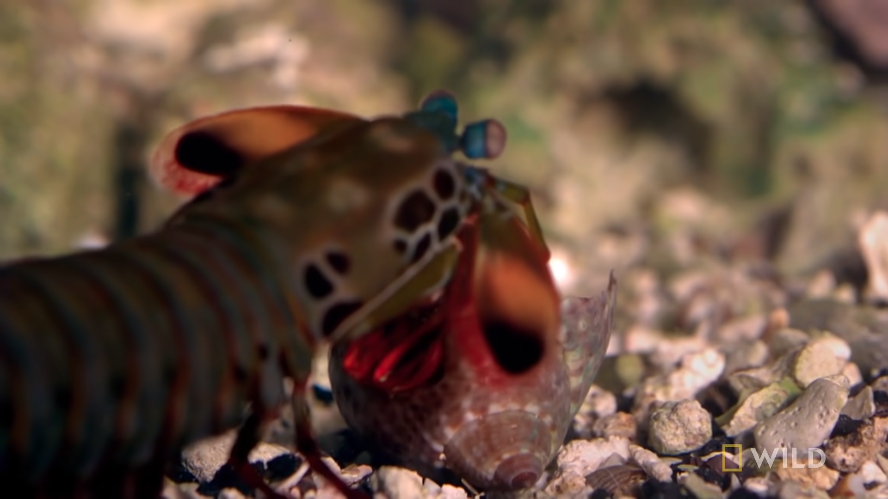

Fatos sobre o Stomatopoda
Informações gerais
- Nome científico: Odontodactylus scyllarus
- Reino: Animal
- Filo: Artrópodes
- Subfilo: Crustáceos
- Classe: Malacostraca
- Subclasse: Hoplocarida
- Ordem: Stomatopoda

Super Visão!
Enquanto seres humanos(as) possuem apenas três tipos de cones (células receptoras de cores), Stomatopodas possuem 16!

Super Soco!
Essas fascinantes criaturas possuem dois apêndices raptoriais que se movem em uma velocidade impressionante. Para se ter noção, um décimo dessa velocidade já seria suficiente para colocar uma bola de beisebol em órbita!!
Apesar de ter em média entre 15 e 30 centímetros de comprimento, a força que o Stomatopoda exerce durante seu ataque equivale ao peso de um objeto de 150 quilogramas!!
